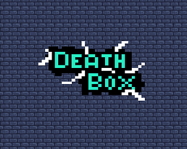

Death Box is a 2D single-player arcade game and the first fully completed game I’ve ever released. Since the summer of 2023, I discovered Unity, and making video games has become a wonderful hobby—one that I hope to turn into a career. Developing Death Box was a major undertaking: challenging, complex, and incredibly rewarding.
Once I finished the game, I decided to publish it on Itch.io, a platform where developers of all kinds share free-to-play and downloadable games and game art. Before that, I had already uploaded a few small, unfinished projects made while learning, and later went on to publish other games of various genres and sizes. I’m still active on the platform, and all my games can be found at the link above.